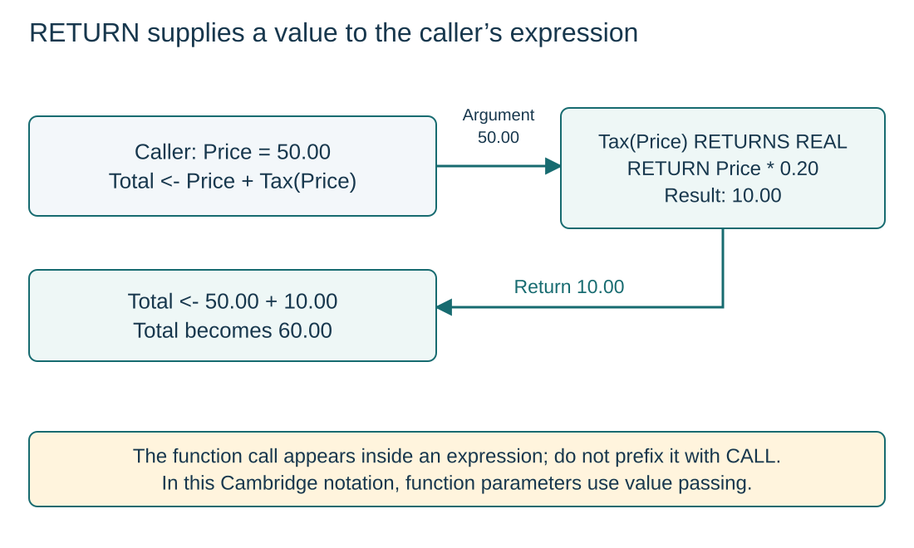

Define and use a returned value
Visual overview
RETURN supplies a value to the caller’s expression

Visual transcript
- Illustrative function: Tax(Price : REAL) RETURNS REAL returns Price * 0.20.
- With Price = 50.00, Total <- Price + Tax(Price) calls Tax with a value copy of 50.00, then receives 10.00.
- The caller completes 50.00 + 10.00 and stores Total = 60.00. Returning a value does not itself print it.
Define a typed result
A function is a subprogram that returns a value. Its header uses FUNCTION Name(parameters) RETURNS DataType and its body uses RETURN Expression, ending with ENDFUNCTION. The returned expression must match the declared result type, and every reachable result path must supply a return value.
Use the result at the call site
Call a function where its result is needed: in an assignment, condition, output or another expression. Total <- Price + Tax(Price) adds the returned tax to the original price. Do not prefix a function call with CALL; that keyword invokes a procedure. Function parameters use value passing in this Cambridge notation.
Evaluate Total <- Price + Tax(Price) for Price 50
- Read the argument: The caller supplies its REAL value 50 to the function parameter.
- Run the function: Tax computes 50 * 0.20, giving 10.
- Return: RETURN supplies that REAL value to the pending expression.
- Resume the expression: Replace Tax(Price) with 10, calculate 50 + 10, then assign 60 to Total.
Compare three different destinations
| Operation | Destination | Meaning |
|---|---|---|
| OUTPUT Value | Console | Display the value. |
| RETURN Value | The calling expression | Supply the current function result and finish this call. |
| Total <- Total + Amount through BYREF | Caller storage | Update the referenced variable. |
Separate a type promise from execution
RETURNS REAL describes the result type in the header; it does not perform a return. RETURN 10.0 supplies one result during execution. A function can return a number, BOOLEAN or other permitted type; the caller must use it in a compatible expression. Cambridge function parameters use value passing.
Worked example · Use a function result in a calculation
- Pseudocode
FUNCTION Tax(Price : REAL) RETURNS REAL RETURN Price * 0.20 ENDFUNCTION DECLARE Price, Total : REAL INPUT Price Total <- Price + Tax(Price) OUTPUT Total - Trace and check
Input 50 causes Tax to return 10 and the caller to output 60.
Core explanation · Exam essentials
- RETURNS declares the result type; RETURN supplies a value and ends the call.
- A returned value replaces the function call inside an expression; do not prefix the call with CALL.